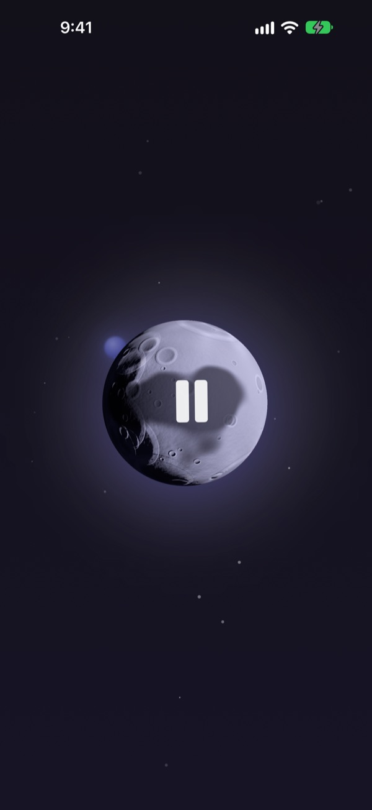
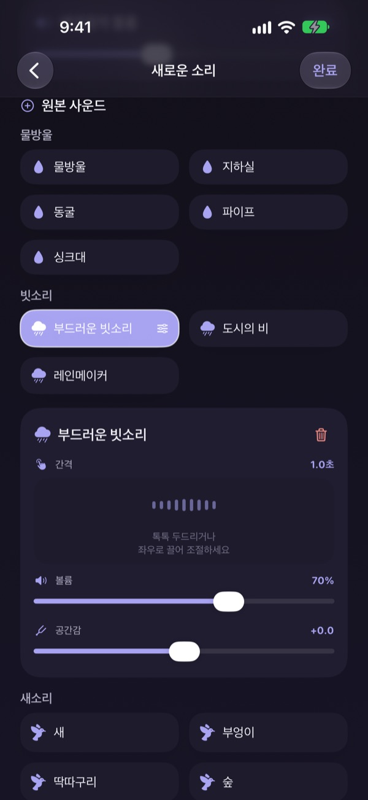
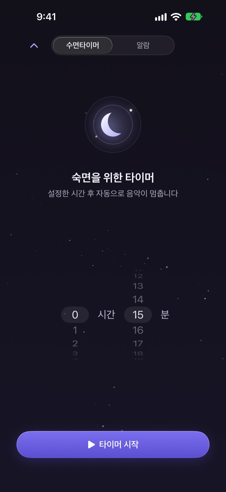
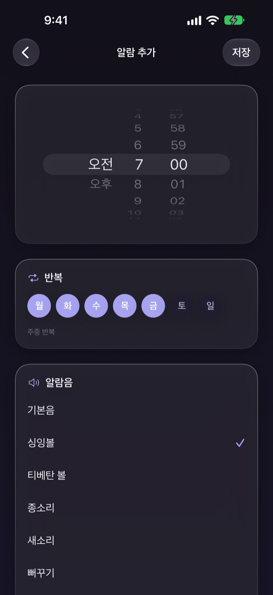
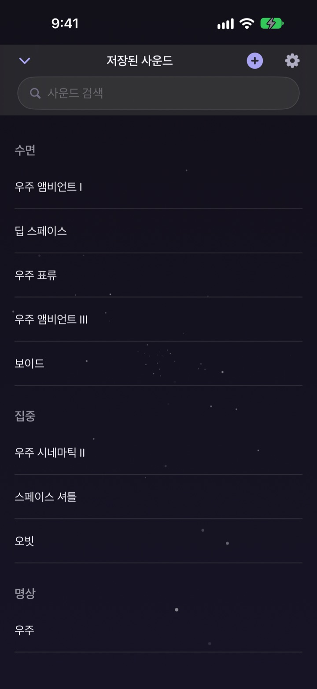

잠들 소리를 찾느라
밤을 보내지 마세요
빗소리에 물방울, 싱잉볼을 겹쳐 나만의 소리를 한 번 만들어 두면, 다음 날 밤부터는 달을 한 번 누르면 됩니다.
모든 소리를 무료로 들을 수 있습니다. iPhone과 iPad에서 씁니다.

잠들기 전에 소리만 고르다 한 시간이 지난 적 있나요?
빗소리는 너무 단조롭고, 파도 소리는 너무 크고, 영상을 틀면 중간에 광고가 끼어듭니다. 달빛은 마음에 드는 소리끼리 직접 겹쳐서 내 귀에 꼭 맞는 소리를 만들고, 그 소리를 달 하나에 담아 둡니다.
마음에 드는 소리를 겹쳐 만듭니다
빗소리, 물방울, 새소리, 싱잉볼 같은 소리를 여러 겹으로 쌓습니다. 소리마다 볼륨과 들리는 간격, 소리가 들리는 자리를 맞추고 파도 소리나 피아노 같은 배경 음악을 깔 수 있습니다.
다 만든 소리는 이름을 붙여 저장해 두고 언제든 다시 꺼내 씁니다.

잠든 뒤에 깨지 않게 꺼집니다
수면 타이머는 소리를 뚝 끊지 않고 천천히 줄이다가 멈춥니다. 끝나는 순간에 다시 깨지 않도록 만든 동작입니다.
화면이 꺼지거나 다른 앱으로 옮겨도 소리는 계속되고, 가만히 두면 화면이 저절로 어두워집니다.

아침은 부드러운 소리로 깨웁니다
싱잉볼, 티베탄 볼, 새소리, 뻐꾸기 같은 소리로 알람을 맞춥니다. 요일마다 반복할 수도 있습니다.

달 하나로 다 합니다
달을 누르면 재생하고 다시 누르면 멈춥니다. 옆으로 밀면 다른 소리, 위로 밀면 수면 타이머, 아래로 밀면 저장한 소리 보관함이 열립니다.
마음에 드는 소리가 나오면 달을 지그시 눌러 즐겨찾기에 담으세요.

시작은 세 단계면 됩니다
- 1
달을 누릅니다
앱을 열고 달을 누르면 바로 소리가 납니다.
- 2
옆으로 넘겨 봅니다
마음에 드는 소리가 나올 때까지 옆으로 밀어 보세요.
- 3
타이머를 맞추고 눕습니다
위로 밀어 시간을 정하면 그 뒤에 소리가 천천히 꺼집니다.
달로 할 수 있는 것
- 누르기
- 재생, 멈춤
- 옆으로 밀기
- 다른 소리로 넘어가기
- 위로 밀기
- 수면 타이머와 알람
- 아래로 밀기
- 저장한 소리 보관함
- 지그시 누르기
- 즐겨찾기에 담기
잠금 화면의 재생 컨트롤로도 멈추고 다시 틀 수 있습니다.
듣는 것은 무료, 더 많이 만들려면 프리미엄
무료
- 모든 소리 듣기
- 소리를 겹쳐 내 소리 만들기
- 내 소리 3개까지 저장
- 천천히 꺼지는 수면 타이머
- 부드러운 소리 알람
- 즐겨찾기
달빛 프리미엄
- 내 소리를 개수 제한 없이 만들고 저장
무료 체험이 있는 월간 자동 갱신 구독
구독은 현재 기간이 끝나기 최소 24시간 전에 해지하지 않으면 자동으로 갱신되며, 무료 체험이 끝나면 요금이 청구됩니다. 이용약관은 Apple 표준 이용약관(EULA)을 따릅니다.
자주 묻는 질문
소리는 어떻게 재생하고 바꾸나요?
홈 화면의 달을 누르면 재생하고 다시 누르면 멈춥니다. 옆으로 밀면 다른 소리로 넘어가고, 위로 밀면 수면 타이머, 아래로 밀면 내 소리 보관함이 열립니다.
화면을 끄면 소리가 멈추나요?
아니요. 화면이 꺼지거나 다른 앱으로 옮겨도 소리는 계속 재생됩니다. 멈추려면 달을 다시 누르거나 잠금 화면의 재생 컨트롤을 쓰세요.
수면 타이머가 끝나면 어떻게 되나요?
정한 시간이 되면 소리가 갑자기 끊기지 않고 천천히 작아지다가 멈춥니다. 잠든 뒤에 깨지 않도록 만든 동작입니다.
알람이 울리지 않아요.
처음 알람을 만들 때 알람 권한을 허용해야 합니다. 설정 앱 > 달빛에서 알람 권한이 켜져 있는지 확인해 주세요.
내가 만든 소리는 어디에 저장되나요?
만든 소리와 알람, 설정은 모두 이 기기 안에만 저장됩니다. 앱을 지우면 함께 지워지니 주의해 주세요.
무료로는 무엇까지 쓸 수 있나요?
모든 소리를 듣고, 소리를 겹쳐 내 소리를 3개까지 저장할 수 있습니다. 수면 타이머와 알람도 무료입니다. 프리미엄을 구독하면 내 소리를 개수 제한 없이 만들 수 있습니다.
구독은 어떻게 해지하나요?
설정 앱 > Apple 계정 > 구독에서 달빛을 골라 해지할 수 있습니다. 현재 기간이 끝나기 최소 24시간 전에 해지하지 않으면 자동으로 갱신됩니다.
기기를 바꿨는데 구독이 풀렸어요.
같은 Apple 계정으로 로그인한 뒤 달빛의 구독 화면에서 '구매 복원'을 누르면 구독이 다시 적용됩니다.
버그를 알리거나 기능을 제안하고 싶어요.
앱의 설정 > 개발자에게 의견 보내기로 보내시거나 아래 메일로 보내 주세요. 보통 며칠 안에 답장 드립니다.
궁금한 점이나 의견은 mizzking75@gmail.com로 보내 주세요.